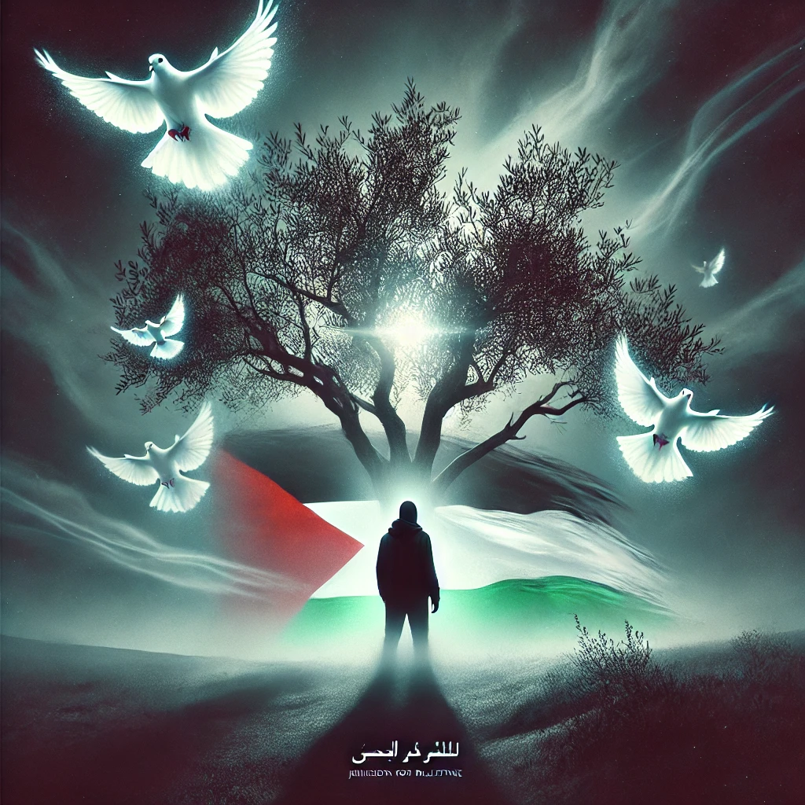

فلسطین، سرزمینی مقدس و تاریخی، سالهاست که نماد ایستادگی در برابر ظلم شده است. از سال 1948 و اشغال سرزمینهایشان، مردم فلسطین با انواع سختیها روبهرو بودهاند، اما هرگز از مبارزه برای آزادی دست نکشیدهاند.
نمادهایی مانند درخت زیتون، سنگهای دست کودکان و مسجدالاقصی، بیانگر مقاومت و هویت فلسطینیان هستند. مبارزات آنها نهتنها نظامی، بلکه فرهنگی و روزمره نیز هست.
پیام مقاومت فلسطین به جهان روشن است: ایستادگی و امید حتی در سختترین شرایط نیز راهی به سوی آزادی است. فلسطین زنده است و زنده خواهد ماند.
جشنواره فرهنگی و پرورشی متنوع برای دانش اموزان و فرهنگیان
